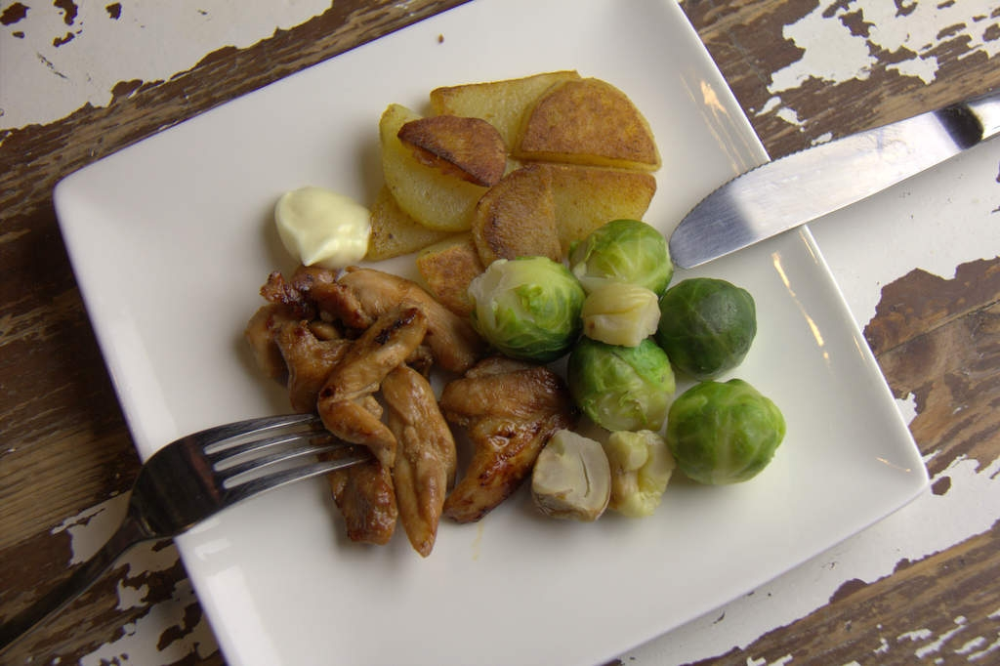

Recept voor originele Japanse kip teriyaki ~
Deze staat al zo lang op mijn wensenlijstje zolang ik me kan herinneren dat er een lijstje is. Al vele varianten geprobeerd tot ik mij onlangs voor een sushi-avond verdiepte in mijn net aangeschafte kookboek van de tradionele Japanse keuken. Daar stond hij mij aan te staren. Het meest simpele, overheerlijkste kipteriyaki-recept. Ooit. Dit wordt niet een heel lang verhaal maar geeft direct de essentie van de Japanse keuken weer, simpel, met weinig ingrediënten en overheerlijk. Aan de slag!
Wij kopen sojasaus met minder zout, dat is lekkerder en gezonder dan sojasaus met veel zout. In dit recept gaat ook mirin, een typisch Japans ingredient. Mirin is zoete rijstwijn met een laag alcoholpercentage. Kijk of je dat ergens bij een toko in de buurt kunt kopen.
Ingrediënten kip teriyaki
{kind=link}
Voor 4 mensen
- 400 gram kipdijfilet
- 4 el sojasaus
- 4 el mirin
De kip teriyaki maken
Snijd de kipdijfilet in dunne reepjes en doe ze in een afsluitbare plastic zak. Giet de sojasaus en de mirin erbij, laat alle lucht ontsnappen en zip het zakje dicht. Masseer de kip door de dressing zodat alle kip in aanraking komt met de dressing. Leg de zak vervolgens in de koelkast. Het liefst ligt de kip een dag te marineren maar een halve dag of een paar uur kan ook.
{kind=link}
{kind=link}
{kind=link}
{kind=link}
{kind=link}
{kind=link}
{kind=link}
{kind=link}
Haal de kip (de volgende dag) uit de koelkast en laat op kamertemperatuur komen. Verhit een grillpan en grill de stukjes kip tot ze goudbruin zijn. Eventueel gebruik je een koekenpan. Serveer de kip teriyaki op een mooie schaal.
{kind=link}
.jpg){kind=link}

{kind=link}
{kind=link}
Eet u smakelijk!
Wendy & Jeroen

Dit recept is in mijn optiek een beetje te eenvoudig………en doet geen eer aan het echte Japanse recept.
De meest briljante smaak vind ik toch echt:
– 1 deel soja saus (inderdaad de low salt versie)
– 1 deel sake
Afhankelijk van hoeveel je wilt maken kan het dus 1 kopje sojasaus en 1 kopje sake zijn of juist gebruikmaken van een limonadeglas als maat.
Hierbij:
– scheut mirin
– scheut gembersiroop (of kook een klein stukje gember mee, dit haalt de smaak echt enorm op)
– flink wat suiker (kan je echt scheutig mee zijn, naar smaak)
Het bovenstaande flink inkoken en reduceren. Het suiker gaat karameliseren en zorgt uiteindelijk dat het sausje, zoals het hoort, licht stroperig wordt en dus goed aan de kip hecht.
Je kan dit laten afkoelen en gebruiken om de kip te marineren OF beter nog nadat de kip dichtgeschroeid is gebruiken om de kip te lakken, iets wat je herhaaldelijk kan/moet doen.
Hoi Paul, Bedankt voor je uitgebreide reactie. Ik ga dit zeker eens proberen. Het water loopt me nu al in de mond. Maar, dit recept komt uit een Japans kookboek van een Japanse chefkok. Groet Jeroen